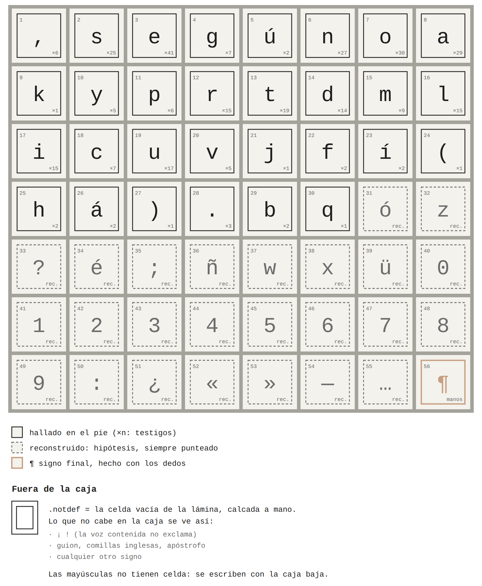
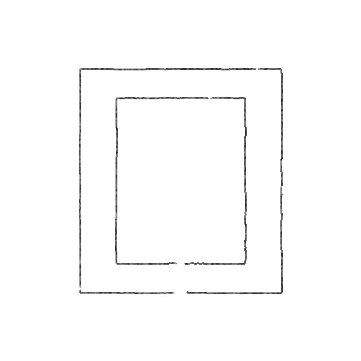

La caja de tipos sale de la cabeza del ídolo.
Sobre el rostro de la Kochamama hay una retícula de celdas iguales: un rectángulo dentro de otro, sin nada adentro. En la foto de la lámina se cuentan 8 columnas y 7 filas. Es la parte que el pie llama calendario, la que nadie ha leído.
Medida en la lámina enderezada, la celda no es regular: mide 0,86 de ancho por alto en los bordes y 0,97 al centro. El dibujo curva la cabeza como un cilindro. La celda de la tipografía es la retícula entera: 0,90.
Esa retícula es la caja. Cada signo ocupa una celda, en el orden en que aparece en el pie: primero la coma que sigue al nombre del ídolo. Después vienen los reconstruidos. En la última, el signo que se hace con los dedos. Lo que no cabe se ve como la celda vacía. No hay mayúsculas ni signos de exclamación: la voz contenida no exclama.

